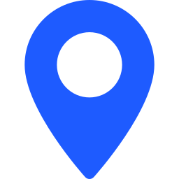
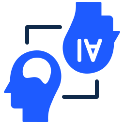
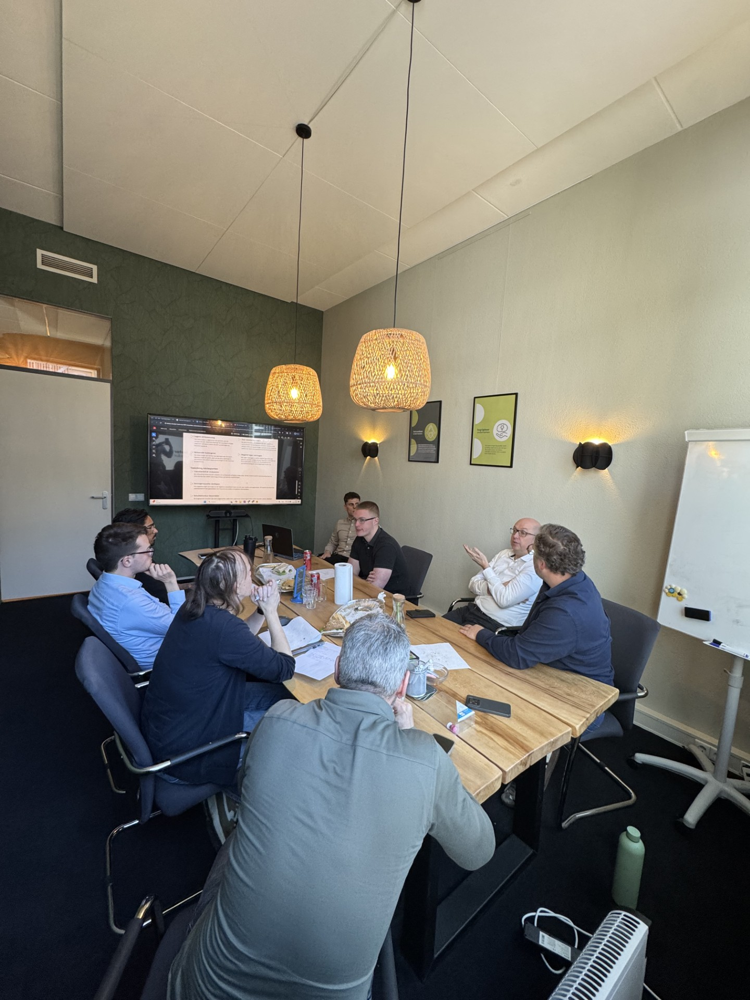

Pareto Partners helpt MKB-ondernemers in en rondom Breda met procesautomatisering, AI en dashboards die het meest opleveren. Geen jarenlange transformatietrajecten, maar een werkende oplossing binnen weken, betaald uit wat het oplevert.

Lokaal en Persoonlijk
Koffie aan de keukentafel, korte lijnen. Zo helpen we ondernemend Breda en omstreken écht groeien.
80/20 filter
We automatiseren niet alles. We pakken juist die 20% van je processen die 80% van het resultaat opleveren.
Strategie én uitvoering
Bij ons is de strateeg ook de bouwer. Wat we samen bedenken, bouwen we zelf — zonder overdracht, zonder informatieverlies.
Meetbaar resultaat
Meten, dashboarden en bijsturen bij elke automatisering. Zo baseer je je beslissingen op data, niet op buikgevoel.
Geen open einde, geen verrassingen.
Vooraf weet je
wat het kost, wat het oplevert en wanneer het klaar is.
In dit gesprek bespreken we waar je tegenaan loopt en of wij daar iets voor kunnen betekenen. Geen verplichting, geen verkooppraatje — gewoon kijken of er een match is.
We duiken een dag in jouw processen en zoeken de 20% waar automatisering het meest oplevert. Binnen een week ligt er een concreet verbetervoorstel op tafel, inclusief prijs, tijdlijn en verwacht rendement.
We bouwen de automatisering, koppelen 'm aan je bestaande systemen en nemen je team stap voor stap mee in het gebruik. Prijs staat vooraf vast, geen uurtje-factuurtje.
We stoppen niet bij livegang: we meten het resultaat, sturen bij tot de doelen zijn behaald en blijven meedenken over je volgende groeistap.
Skin in the game: wij verdienen alleen als jij verdient
Onze prijs is nooit een los uurtarief. Hij is gekoppeld aan wat de oplossing jou oplevert. Wij denken in impact, niet in uren.
Wij zijn Jilles en Rob.
Twee ondernemers uit Breda die geloven dat het MKB dé motor van Nederland kan zijn — zodra ondernemers weer de tijd krijgen om te ondernemen. Wij zien te vaak dat die tijd wegvreet aan losse systemen, repetitief werk en beslissingen op onderbuikgevoel, omdat data verspreid ligt over vijf plekken.
Rob bouwde in New York zijn eerste automatiseringen voor bedrijven. Jilles werkte als zelfstandig strategisch consultant en helpt ondernemers hun groeiambitie te vertalen naar concrete KPI's en actiepunten. Toen we voor dezelfde opdrachtgever aan een project werkten, kwamen die twee werelden bij elkaar: strategie zonder uitvoering blijft een goede intentie — en die uitvoering bouw je door slimme automatisering in de dagelijkse processen te weven. Vanaf dat moment sloegen we de handen ineen.
Vandaar Pareto Partners: één plek waar strategie en uitvoering samenvallen. We beginnen aan de keukentafel, bouwen slimme automatiseringen achter de schermen, en blijven meten wat het oplevert. Van eerste gesprek, tot laatste meetpunt. Wij geloven dat een organisatie pas écht vooruitgaat wanneer bedrijfsprocessen automatisch en efficiënt verlopen. Zo ontstaat ruimte voor groei, innovatie en ondernemerschap.
Lokaal in Breda. Betrokken vanaf dag één.

Elk traject begint bij jouw grootste bottleneck. Pas daarna bepalen we of automatisering de juiste oplossing is.
Van vage groeiambitie naar concrete borging. Samen met jou en je team scherpen we missie, visie en strategie aan — niet in een rapport dat wij opleveren, maar in gesprek. Die richting vertalen we naar KPI's die écht kloppen voor jouw bedrijf, en verwerken we in een dashboard dat iedereen begrijpt en dagelijks gebruikt.
Één overzicht dat je team elke ochtend opent, met omzet, productiviteit en jaardoelen in samenhang. Altijd actueel, zonder handmatig exporteren.
Processen die zichzelf afhandelen, van intake tot facturatie. Wij halen de routine uit handen zodat jij en je team meer tijd hebben voor wat automatisering nooit kan: écht persoonlijk contact met je klanten. Minder handmatig werk, minder fouten — meer ruimte voor het werk dat er toe doet.
Van eerste klantcontact tot verstuurde factuur volledig geautomatiseerd, inclusief koppelingen tussen alle tools die je al gebruikt.
Van handmatige acquisitie naar een voorspelbare stroom nieuwe klanten. Scraping, outreach, follow-up en automatische CRM-updates lopen op de achtergrond — jij ziet alleen het resultaat. Automatisering betekent bij ons niet 'kille bot': onze outreach klinkt zoals jij hem zou schrijven, met karakter, warmte en de tone of voice van je merk.
Elke ochtend een lijst met tien tot vijftien gekwalificeerde prospects in je CRM, klaar om op te bellen.

Wij bouwen AI-assistenten die opereren als een extra teamlid. Voor klantvragen, interne kennisontsluiting, sales-ondersteuning of documentwerk — altijd in jouw tone of voice, altijd met de manier waarop jouw beste medewerker het zou aanpakken.
Een AI-collega op WhatsApp die klantvragen beantwoordt in jullie stijl, plus een interne assistent die kennis vindt die anders in mailboxen en hoofden verstopt zit.
Niet zeker of we jou kunnen helpen?
Dat weten wij ook niet zonder kennismaking. In een kort gesprek bepalen we samen of onze oplossing hier het verschil maakt — zonder verplichtingen.
Deze ondernemers hebben weer tijd voor het échte werk.
Onze opdrachtgever verloor dagelijks uren aan het handmatig zoeken naar vacatures op jobboards.
Een interim financekantoor uit Breda had een
medewerker die dagelijks jobboards afstruinde op zoek naar finance-vacatures — een uur of twee, elke
dag. Toen die capaciteit wegviel, stapelden gemiste kansen zich op.
Wij bouwden scrapers die
meerdere jobboards automatisch doorzoeken, de relevante vacatures filteren en inclusief
contactpersoon op één plek klaarzetten. De consultant hoeft alleen nog contact op te nemen: hét werk
waar hij goed in is.

Onze opdrachtgever verloor bij elk klantgesprek uren aan voorbereiding. Tijd die niet besteed werd aan advies.
Een accountantskantoor in Breda wilde sneller
voorbereid aan tafel zitten bij klanten. Voorbereiding kostte uren per gesprek — tijd die geen omzet
opleverde en die accountants liever aan advieswerk besteedden.
Wij bouwden een tool waarbij je
een jaarrekening uploadt en binnen minuten een overzichtelijke onepager terugkrijgt: bedrijfsprofiel,
kerncijfers, pluspunten, aandachtspunten en concrete adviespunten. In de huisstijl van het kantoor,
klaar om als gespreksstarter of commercieel instrument in te zetten.
Plan een kennismakingsgesprek in. Geen verkooppraatje — we luisteren, verkennen samen waar de meeste winst zit en zeggen eerlijk of we een match zijn.
Plan een kennismakingsgesprekGeen verplichtingen. Aan het einde van het gesprek weet je wat er mogelijk is. De keuze is aan jou.